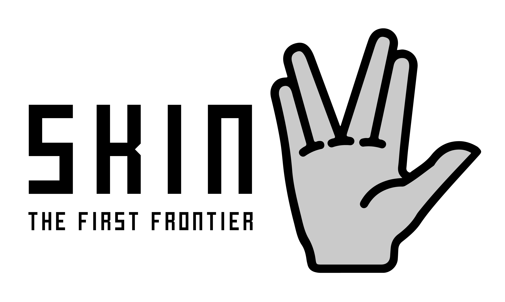

Skolerapport
Velkommen til min hjemmelavede hjemmeside
Tak for I vil tage mig i praktik
Jeg er meget taknemlig
Holdet Kenneth samarbejder med hedder "Startrakkers". En af Kenneth kollegaer kom op med navnet fra filmene "Startrackers"
Hvad har jeg lært?
Html: Html er hjemmesidens struktur opmærkningssprog. Det bruger man til at få tekst og billeder ind i ens hjemmeside. Html er en forkortelse for HyperText Markup Language. Jeg har lært rigtig mange forskellige forkortelse og måder, man kan bruge Html på.
CSS: CSS er en forkortelse for Cascading Style Sheets. Det er hjemmesidens "layout-sprog", man bruger den til eks. at sætte teksterne til de steder du gerne vil have dem hen. Eller bruges til hvor langt der skal være imellem hver rubrik. Ligesom Html har jeg lært mange forskellige måder, man bruge det på.
Java Script: Java Script er det der eks. gøre sådan at tekster forsvinder eller dukke op. Eller i spil når noget skal udføres osv. Kurset jeg tog, lærte mig en del om Java script. Det er lidt svært i starten, men når man lærer den at kende, bliver det lettere at forstå og bruge den.
Mine forventning og tanker
Jeg forventede at Kenneth og hans team sad i et lille lokal alle sammen, men de var ikke sandt. Alle programmører og IT relateret sad i et stort lokale sammen. Jeg tænkte at Kenneths team ville være 7 til 12 stk og de var 9 stk. Der er en som er deres "chef", han "styrer" gruppen og han er deres kontaktperson hvis der er noget. Jeg troede at alle fik en windows computer eller tog deres egen med men, alle der bliver ansat får en Macbook og en widescreen. I Kenneth gruppe "Startrakker" har de deres eget logo og håndtegn. Der er et meget samvær og holdånd i Kenneths gruppe.
Dagbog for alle dagene:
Mandag:
Vi sendte Valdemar afsted mod Lufthavn fra hovedbanegården og derefter gik vi til Leo Pharma Innovation Lab, hvor Jeg mødte Kenneths team og begyndte at lære om html og css.
Tirsdag:
Kenneth og jeg tog cyklerne og fulgte Valdemar ned til togstation hvor vi skulle mødes med Valdemars praktikvært. Vi cyklede derefter hen til Kenneths kiropraktor og derefter cyklede vi hen til Leo Pharma Innovation Lab. Da klokken var halv 10 gik vi alle ind i et mødelokale, hvor vi snakke om hvad vi/de har lavet igennem af ugen. Vi gik en tur til Kongens have og tog en is på vej derhen. Vi cyklede hjem 15.30, hvor vi senere hen sendte Valdemar med toget hjem.
Onsdag:
Kenneth, Ida og jeg startede med at gå hen og stemte. Derefter spiste vi mad på en hyggelig lokal restaurant og derefter cyklede Kenneth og jeg til Leo Pharma Innovation Lab. Der var kun to andre end dem fra Startrakkers, som arbejdede da det var Grundlovsdag. Jeg satte mig derefter og skrev videre. Bagefter skulle jeg tage et online kursus i Javascript. Da det var Grundlovsdag, var kantinen lukket, så vi tog til Refshaleøen hvor vi spiste på street food med alle de andre på kontoret. Da vi kom tilbage prøvede jeg at lege med Javascript og animationer.
Torsdag:
Kenneth og jeg startede med at tage til Kiøsk og købe en fødselsdagsgave til Matt. Derefter tog vi bussen, som blev forsinket med 20 minutter, da der var meget trafik ved hovedbanegården
Tak til Startrakkers og Leo Pharma Innovation Lab for at lade mig følge dem i min praktik og for at tage mig godt imod med åbne arme.